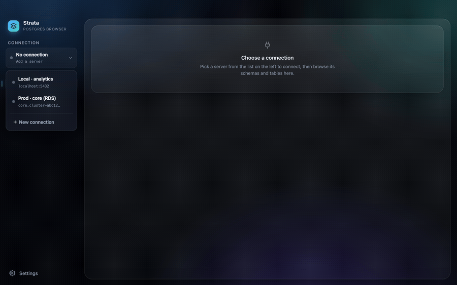
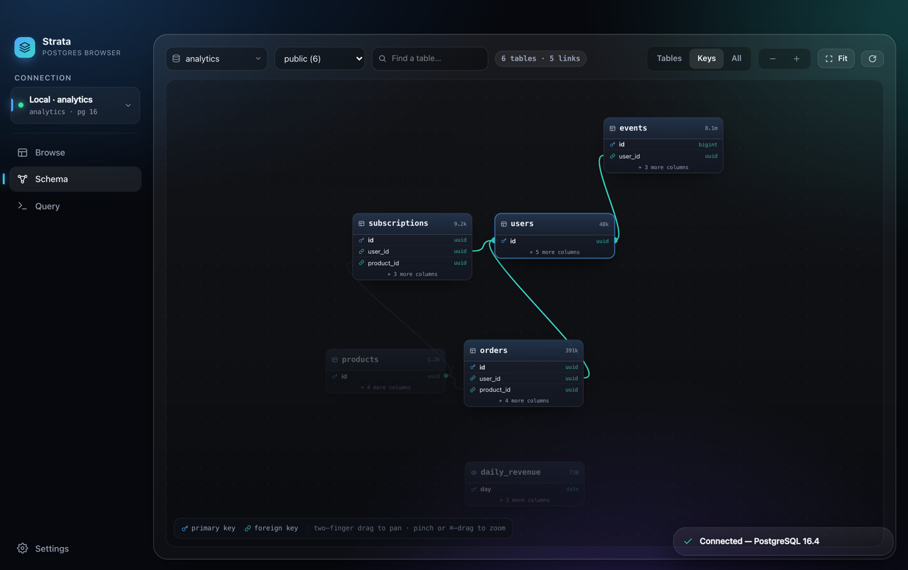
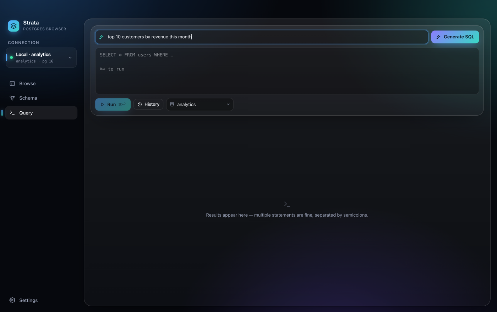

See your Postgres data
the instant you click.
A native macOS Postgres browser — the fast counterpart to pgAdmin. Pick a connection, click a table, and your data is on screen. Filter, sort and edit without writing SQL.
Universal · Intel + Apple Silicon · MIT licensed

Built for the quick lookup, not the SQL marathon
Most tools optimize the query editor. Strata optimizes the thing you actually do 80% of the time: find a row, check a value, fix a typo — fast.
Click & browse
Connection → table → data, instantly. Stackable filters, column sort, exact counts on demand. No SQL required.
AI SQL, no API key
Ask in plain English and Strata writes the SQL from your live schema — riding your existing Claude or Codex CLI sign-in. No key, no per-token bill.
Safe edits
Inline edits stage locally and commit in one transaction that rolls back unless every row matches its primary key exactly once.
Interactive schema map
A force-laid-out ER diagram of your whole schema — pan, zoom, search, and click a table to light up everything it links to.
EXPLAIN, visualized
Query plans as a flame-style tree with row-estimate badges — plus one-click AI diagnosis of the bottleneck. ANALYZE always rolls back, safe even on writes.
Actually native
Real macOS vibrancy, hidden title bar, small binary. Built with Tauri — no Electron, no bundled Chromium.


Why Strata?
There are plenty of Postgres GUIs. Strata is deliberately narrow: the fastest way to look something up — or fix one row — on a Mac. If you need Windows/Linux or many engines, DBeaver or Beekeeper Studio are better fits.
| Strata | pgAdmin | TablePlus | Postico | DBeaver | |
|---|---|---|---|---|---|
| Price | Free | Free | $99+ | Paid | Free CE |
| Open source | ✓ MIT | ✓ | ✗ | ✗ | ✓ |
| Mac-native (no Electron/Java/web) | ✓ | ✗ | ✓ | ✓ | ✗ |
| AI SQL with no API key | ✓ | ✗ | ✗ | ✗ | ✗ |
| Interactive schema ER map | ✓ | partial | ✗ | ✗ | ✓ |
Install in two steps
Strata isn't code-signed with an Apple Developer ID yet, so the first launch needs one quick command. You only ever do it once.
- Download the latest
.dmg, open it, and drag Strata into Applications. - Open Terminal and clear the quarantine flag once:
xattr -cr /Applications/Strata.appThen just double-click Strata. Prefer no Terminal? Double-click, then System Settings → Privacy & Security → Open Anyway. The full source is on GitHub if you'd like to read or build it yourself.